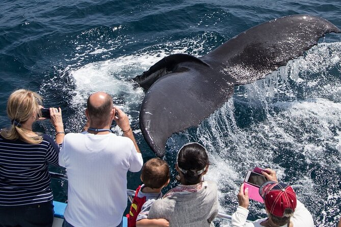
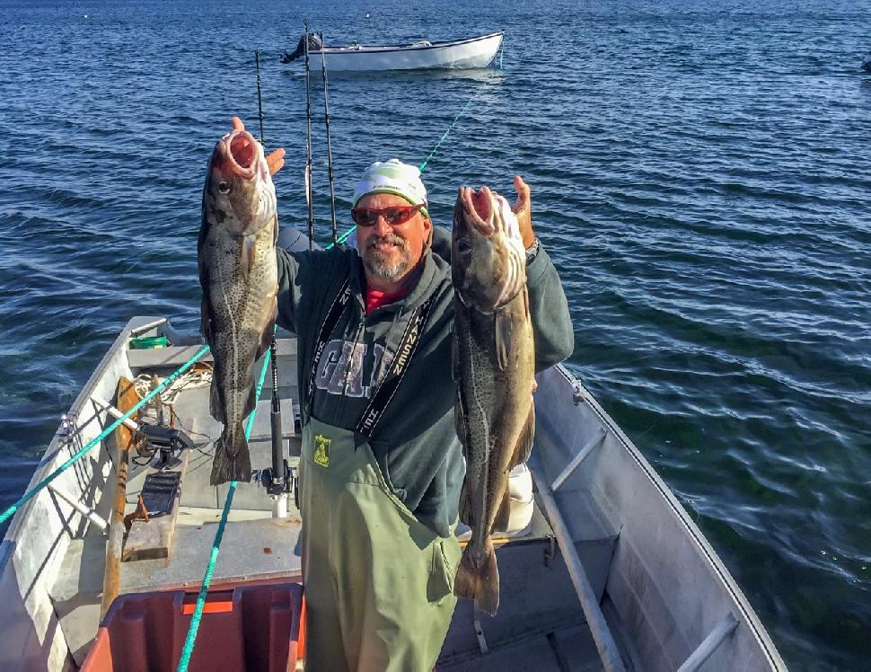
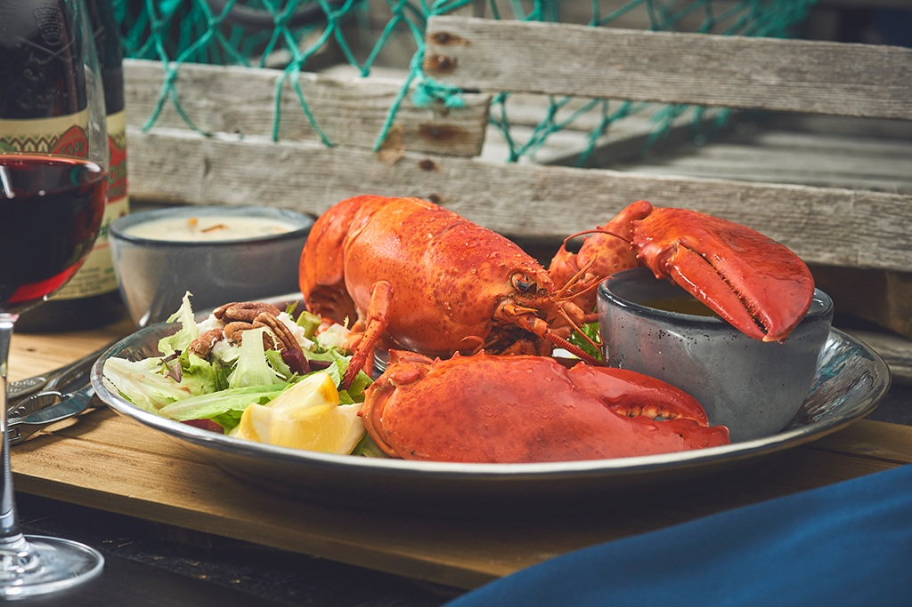

Join us for a thrilling family/group activity that combines the excitement of whale watching with the traditional Newfoundland pastime of cod jigging.



Newfoundland and Labrador is one of the most spectacular whale watching places on Earth. Catching a single glimpse of these majestic mammals is an exciting and awesome experience with our boat tour.
Enjoy the sights, experience cod jigging and take in the sounds of the ocean. As you return to shore, often there will even be an old-time fisherman to show you how to clean and fillet your fish!
We'll start our adventure with a scenic boat ride along the beautiful coastline of Conception Bay, where we'll have the chance to spot majestic whales breaching and blowing. Our experienced guide will provide interesting facts about these incredible creatures and their behavior in the wild.
Once we've had our fill of whale watching, we'll head to a prime fishing spot where we'll try our hand at cod jigging. Our guide will provide all the necessary equipment and teach us the techniques needed to catch our own fresh cod. It's a hands-on experience that's sure to create lasting memories.
After a successful day on the water, we'll bring our catch back to shore and enjoy a delicious seafood feast, cooked to perfection by Chef Asano. It's the perfect way to cap off an unforgettable day spent exploring the natural wonders of Newfoundland.